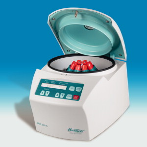
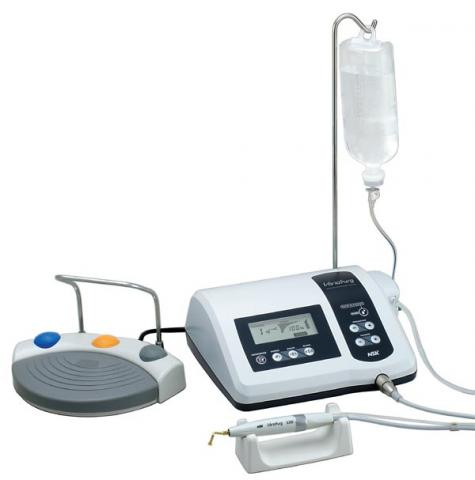
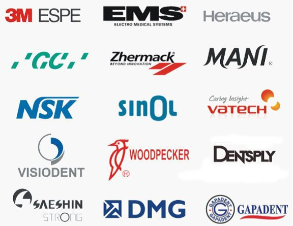

Contamos con equipamiento de vanguardia al alcance de todo público

Centrifuga EBA 200
L-PRF™ es una combinación tridimensional de fibrina autóloga rica en plaquetas y rica en leucocitos, obtenida a partir de la sangre del paciente. Se elabora a través de procedimientos clínicos muy sencillos que dan como resultado la obtención de una matriz de fibrina rica en plaquetas delgada, fuerte, flexible y adecuada para suturar. Esta matriz natural es rica en plaquetas, factores de crecimiento y citoquinas que se derivan de las plaquetas de la sangre y leucocitos. La presencia de estas proteínas se ha demostrado indicada para producir una rápida cicatrización, especialmente durante los críticos siete días después de su colocación. Esta matriz promueve la migración y proliferación celular de una manera más eficiente, sin añadir ningún aditivo químico o trombina bovina. Motor quirúrgico y de Implantes
Algunas marcas que podrás encontrar en nuestra clínica.
